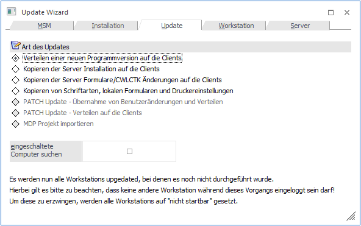
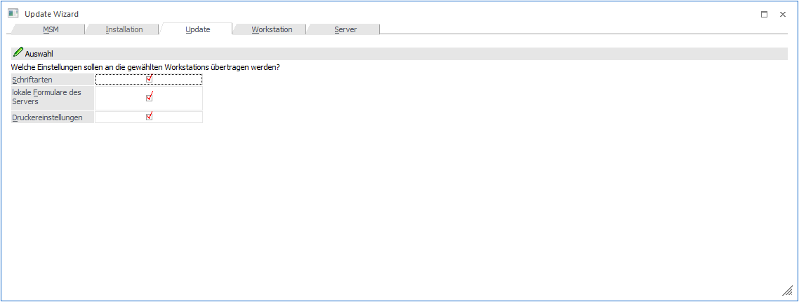
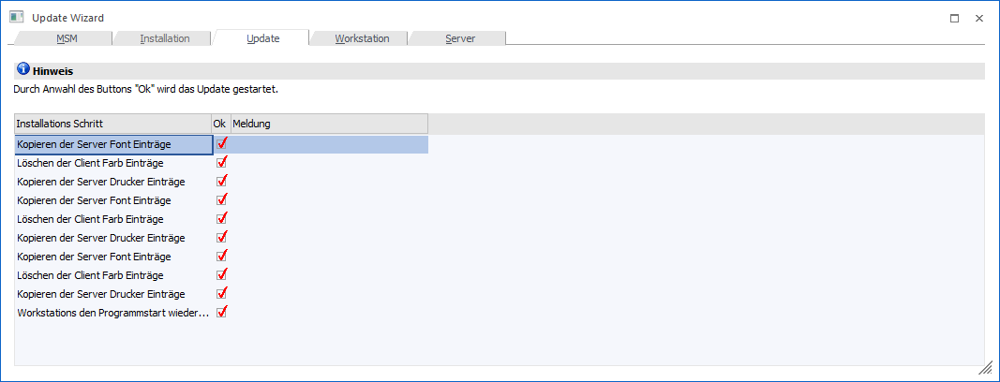

Trotzdem gibt es die Möglichkeit, verschiedene Arbeiten (verteilen von Programmen oder auch nur von Programmteilen) über den Update Wizard durchzuführen:

Bei den verschiedenen Optionen führt immer ein Wizard durch die Optionen, der im Wesentlichen immer den gleichen Ablauf hat:
Schritt 1
Im ersten Schritt wird definiert, welche Option durchgeführt werden soll. Dabei gibt es folgende 4 Möglichkeiten:
ü Verteilen einer neuen
Programmversion auf die Clients
Mit dieser Option können Workstations, die
z.B. beim Updaten nicht aktiv waren, im Nachhinein aktualisiert werden.
ü Kopieren der Server Installation
auf die Clients
Mit dieser Option kann eine vollständige Installation auf
eine Workstation transferiert werden (z.B. weil der Benutzer Systemdateien
gelöscht hat).
ü Kopieren der Server
Formulare/CWLCTK Änderungen auf die Clients
Mit dieser Option können
individuell vorgenommene Änderungen auf die Clients transferiert werden.
ü Kopieren von Schriftarten, lokalen
Formularen und Druckereinstellungen.
Mit dieser Option können die genannten
Bereiche auf eine Workstation transferiert werden (z.B. wenn die Workstation neu
eingerichtet wurde, und nicht alle Drucker und Formulare und Schriften manuell
eingerichtet werden sollen).
Die Optionen "PATCH Update" und "MDP Projekt importieren" werden in eigenen Kapiteln beschrieben, weil - bevor man zu diese Auswahl gelangt - doch andere Schritte durchgeführt werden müssen.
Durch Anklicken des VOR-Button gelangt man in den nächsten Schritt. Durch Drücken der ESC-Taste wird das Fenster geschlossen.
Schritt 2
Im 2. Schritt kann definiert werden, welche Workstations bei der durchzuführenden Aktion berücksichtigt werden sollen.

In diesem Fenster werden 2 Tabellen angezeigt, wobei der Inhalt der Tabellen von der im ersten Schritt ausgewählten Option abhängig ist:
Ø Verteilen einer neuen Programmversion auf die Clients
Bei dieser Option werden in der ersten Tabelle alle Workstations angezeigt, die nicht die aktuelle Programmversion aufweisen und die aktiv sind.
Mittels dieses Buttons können alle Zeilen deaktiviert werden;
Durch Anwählen des "Umkehren"-Buttons werden aktivierte Zeilen deaktiviert, und deaktivierte Zeilen aktiviert.
In der zweiten Tabelle werden dann die Workstations angezeigt, die entweder eine aktuelle Programmversion haben, oder die nicht aktiv sind.
Ø Restliche Optionen
Bei den restlichen Optionen werden in der ersten Tabelle jeweils die Workstations angezeigt, die aktiv sind, und die auch angesprochen werden können. Durch Aktivieren der Checkbox "Update" kann bestimmt werden, welche WS beim Verteilen berücksichtigt wird.
In der zweiten Tabelle werden die Workstations angezeigt, die aus diversen Gründen kein Update erhalten können. Diese Gründe können sein: auf der WS ist keine aktuelle Version vorhanden, die WS ist nicht aktiv, auf die WS kann zugegriffen werden etc..
Durch Anklicken des VOR-Button gelangt man in den nächsten Schritt. Durch Drücken der ESC-Taste wird das Fenster geschlossen. Durch Anklicken des ZURÜCK-Buttons kann nochmals gewählt werden, was verteilt werden soll.
Schritt 3
Der Schritt 3 wird nur dann angezeigt, wenn die Option " Kopieren von Schriftarten, lokalen Formularen und Druckereinstellungen" verwendet wurde.

Über die drei Checkboxen kann gesteuert werden, welche Einstellungen auf die Workstations verteilt werden sollen:
ü Schriftarten:
Es wird die Datei
MESOCOL.INI verteilt
ü Lokale Formulare des
Servers
Damit können Formulare, die nur am Server gespeichert wurden,
verteilt werden. Dabei wird die Datei LOCALFORM.DAT verteilt.
ü Druckereinstellungen
Damit wird
die Datei MESOPRINT.INI verteilt. Bei dieser Option ist darauf zu achten, dass
nicht unbedingt auf jeder Workstation die gleichen Drucker vorhanden sind. Ggf.
sollte die Druckereinstellung auf den einzelnen Workstations selbst vorgenommen
werden.
Durch Anklicken des VOR-Button gelangt man in den nächsten Schritt. Durch Drücken der ESC-Taste wird das Fenster geschlossen. Durch Anklicken des ZURÜCK-Buttons kann nochmals gewählt werden, was verteilt werden soll.
Schritt 4
Bei diesem Schritt wird zuerst keine Information angezeigt.

Durch Anklicken des OK-Buttons wird die ausgewählte Aktion durchgeführt, wobei in der Tabelle die jeweiligen Aktionen angeführt werden.

Wenn das Verteilen durchgeführt wurde, wird auch eine entsprechende Meldung angezeigt.

Zusätzlich dazu wird auch noch ein MSM-Protokoll am Bildschirm ausgegeben, das ebenfalls noch alle durchgeführten Aktionen auflistet. Wenn dieser Punkt erreicht wurde, dann das Fenster durch Drücken der ESC-Taste geschlossen werden.